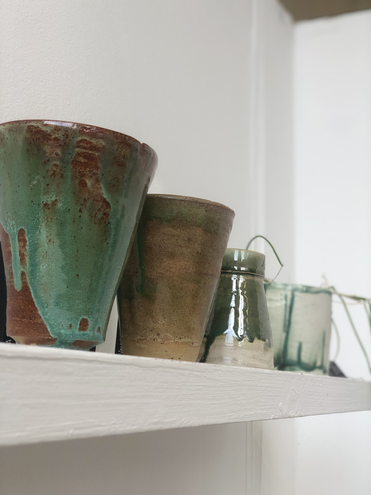
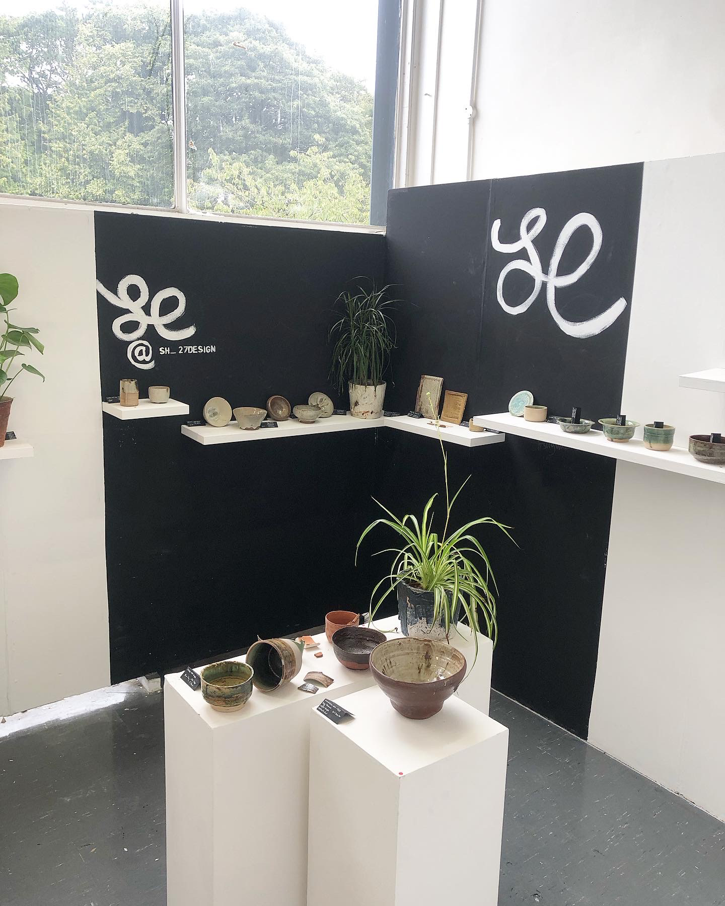
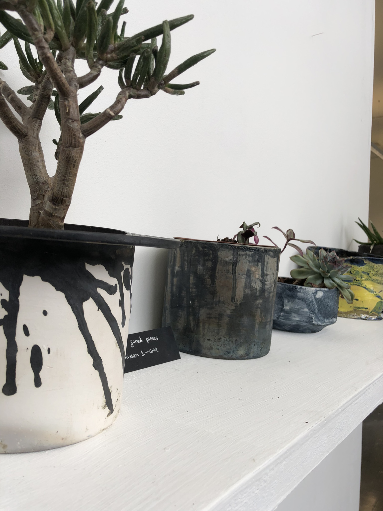
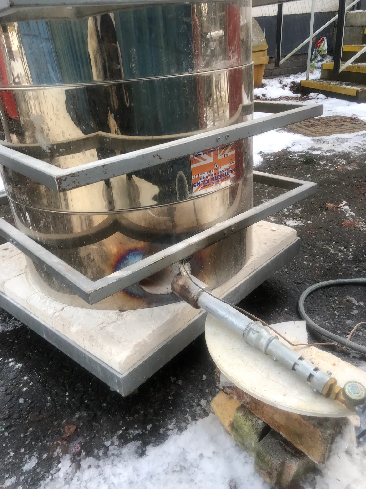
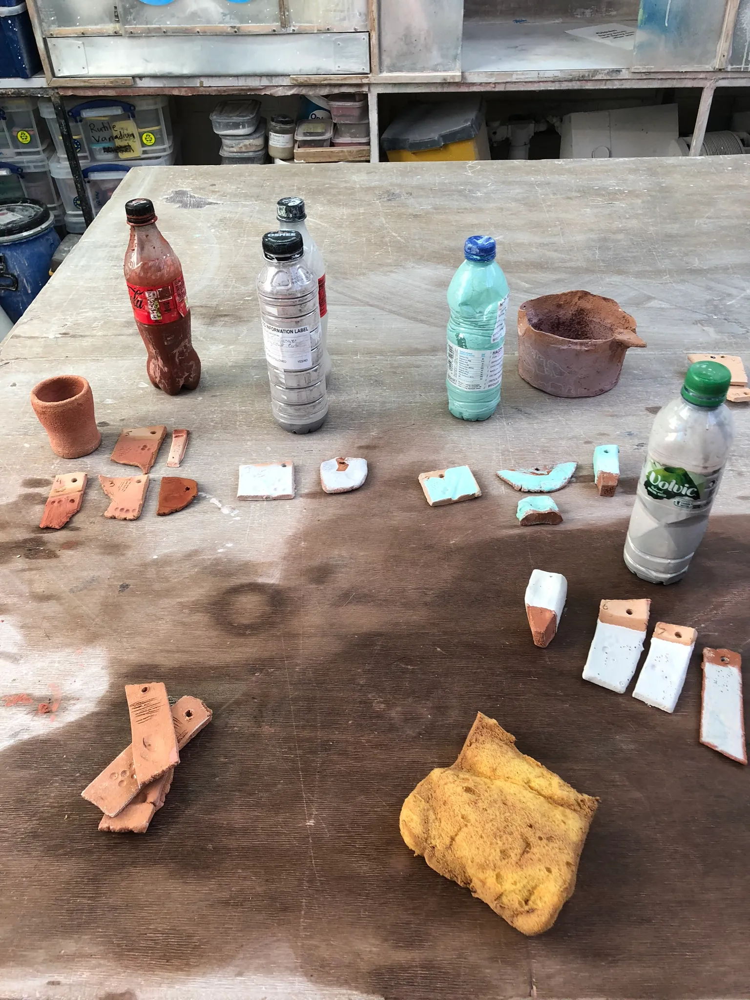
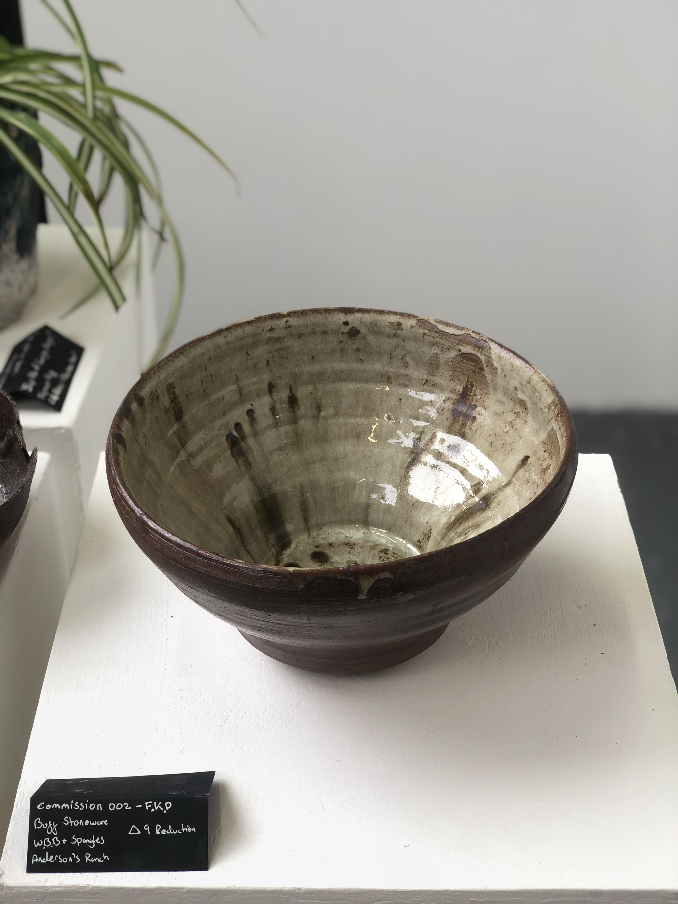
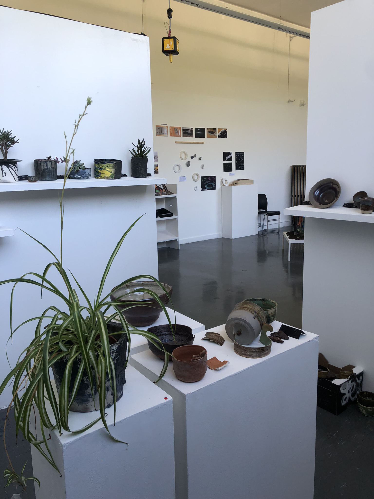

02 — Ceramics & Practice · Gray's School of Art
01 — Context
The Graduate in Residence programme at Gray's School of Art gives recent graduates access to studios, kilns, and equipment for a year after finishing their degree. In exchange, you contribute to the department — workshop prep, supporting technicians, and teaching.
Twelve months of studio access and no excuses. The work either develops or it doesn't.
For me, the year was about figuring out what my ceramic practice actually was — what I kept returning to, what materials interested me, and how to develop a consistent body of work rather than a collection of individual experiments. It was also the year I started building an audience for it, from scratch, almost entirely through social media.


02 — Practice Development
Most of the year went into glaze development and material testing — building recipes through repetition and documenting what actually worked. The two glazes that came out of it were Spangled White Bird , a base with iron oxide spangling that produces a crystalline surface somewhere between clinical and organic, and Crystal Emerald, both developed in both cone 6 and cone 9 variations for different firing conditions. These glazes were the basis for most of the work in the BLEND exhibition, and future works.
I also ran a self-directed study combining earthenware clay imported from Pakistan — Multanni Mitti, with British stonewares. It doesn't behave well at high temperatures and several firings confirmed that. But the failures were more useful than the successes; they taught me a lot about how surface and glaze behaviour changes when you push materials outside their range. Some of the pieces from that study were later sold at Crafted By Design. They did however work well when applied as a slip over stoneware forms, which led to a series of slipcast pieces or wheellthrown forms with slip decoration that were glazed over with the White Bird.
The multanni mitti pieces could've failed altogether. They didn't. Combining materials was the saving grace.
Surface decoration drew on layered slips, drips and brush effects, and controlled iron oxide spangling — ways of introducing variation within functional stoneware without it reading as arbitrary. The work across the year was split between functional pieces and more sculptural work, and the residency gave me enough time to let both develop without forcing them to converge.


03 — Teaching & Community
What started as a few self-directed firings with like-minded friends gradually turned into something more formal. From skiving my honours project to becoming aIt became a full on officially sanctioned Robert Gordon University Society— with me running informal teaching sessions outside the curriculum, making ceramics accessible to students who wouldn't otherwise have had the chance to fire in a raku kiln or beginner ceramics students who wanted to get more practice in the workshop. It was a way to build community and share what I was learning, and it ended up being one of the most rewarding parts of the year.
Working alongside the workshop technicians, I was responsible for making up communal base glazes from proprietary recipes, recycling workshop clay, and supporting students with technical questions. It was practical, unglamorous work — and a very good way to understand how a ceramics department actually runs.
I ran weekly Rhino and Keyshot challenges for students, which served two purposes — it gave students structured support with software they were expected to know, and it sharpened my own CAD thinking considerably. Teaching something you're still developing forces a level of clarity that self-directed practice doesn't.
I taught myself CapCut and Adobe Lightroom and posted daily short-form video and photography across social channels. The goal was straightforward — build an audience for the work before it was exhibited. By the time BLEND opened, there was already a following.
12mo
Studio Residency
2+
Original Glaze Recipes Developed
1st
Public Exhibition & Sale


04 — Exhibition
BLEND opened on the 4th of September 2023 — the Graduate in Residence programme exhibition, showing work by GiR graduates alongside Masters students at Gray's. It was my first proper public exhibition and the first time my ceramics were available to buy.
Exhibited and sold alongside Masters students. The line between student work and professional practice disappeared.
The work shown at BLEND drew on everything developed across the year — the spangled white bird pieces, the multanni mitti experiments, the functional stoneware. Showing it in that context, alongside work made by people at a more advanced stage of their practice, was a useful pressure. It confirmed that the year had done what it was supposed to do.
The Greene King commission also came through during this period — a separate client project that ran alongside the residency and gave the practice an early commercial dimension. The residency established my identity as a ceramicist. The commission confirmed it could function as a business.

